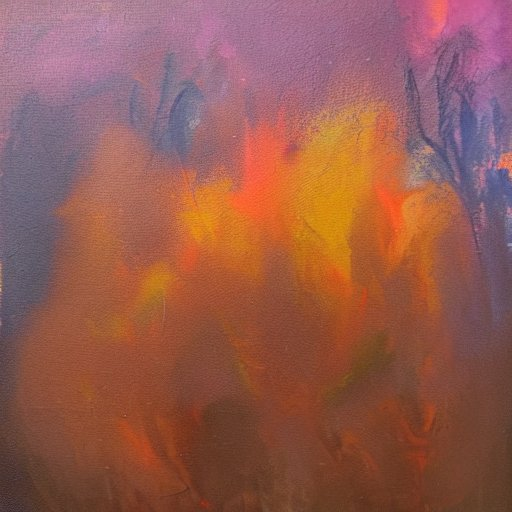

Letreiro luminoso
Amar é só sentir? Eu diria que não… Muitas pessoas são consideradas por outras incapazes de amar ou consideram a si mesmas inaptas nesse assunto. De fato, existe uma lacuna entre as nossas potências sentimentais e a nossa capacidade de exteriorizar isso para o mundo sem arrasar quem amamos, nos qualificando enquanto analfabetos sentimentais em processo de eterna aprendizagem. Porém, nesse percurso em direção ao profundo, nossa maior dificuldade é justamente o amor ser uma palavra gasta. Por não sabermos mais amar? Eu diria que não. Em todos os tempos, o amor foi e sempre será uma questão irresolúvel. No entanto, sua concepção atualmente está um pouco complicada, distante e perdida de um sentido claro. Um pomposo significante sem um significado. Rei da parola. Uma grande isca sem o pote de ouro no final do arco-íris. Digo isso porque a forma, como em muitos valores no contemporâneo, se sobressai ao conteúdo. Então, se a atenção está na forma – no letreiro luminoso – pouco importa o que tem atrás das luzes… Pode ser, literalmente, qualquer coisa; sem um significado claro e universal, passa a significar algo específico para cada um.
Mas essa não é uma sina particular do amor. Na verdade, qualquer ideia complexa dá dor de cabeça em termos de linguagem. Entretanto, dela o amor é seu maior dependente. Pensa no sol & lua, é tipo assim.
Alguns defendem que o amor é lido através da atitude, e que essa seria a representação mais adequada na quase impossível tarefa de expressá-lo. Eu discordo. E não é porque ações concretas não sejam vitais para que a outra pessoa entenda o amor que você deseja demonstrar, nem que o clichê “eu te amo” seja capaz de resolver tudo. Contudo, nenhuma ação é possível sem se untar com as palavras. Daí, cê me fala: “mas é justamente aqui que a conversa fiada aparece”, e eu concordo. Porém, é nesse mesmo ponto em que temos mais pistas de quem se utiliza das formas sem a substância que preenche o conteúdo e podemos perceber munidos de mais elementos, o que realmente significa as palavras de alguém. E, afinal, é no caminho da linguagem que conseguimos entender o que a outra pessoa deseja nos comunicar, com suas particularidades e minúcias únicas. E maravilhosas. Amar de um jeito próprio, ser amade de um jeito inédito. Esse trabalho só as palavras podem fazer, pois só elas têm suas inúmeras maneiras peculiares de expressar algo. Mesmo se quiséssemos pautar um relacionamento apenas em ações, elas nunca nos diriam as miudezas do pensar e do sentir da outra pessoa. As discussões elucidam essa sensação: uma briga muitas vezes tem seu motivo por uma brecha em que faltaram palavras suficientes.
Assim como a literatura, o amor depende da linguagem. E vice-versa. Se meu sentimento não encontra meios de se fazer inteligível, eu também sofro com a impossibilidade de desaguar a minha potência, afinal, eu quero que ela encontre a sua fonte de adoração. Uma transa é essencial: <<< O amor só se concretizará se pudermos nos sintonizar numa mesmíssima frequência >>>
Junho
Nesta edição pedimos que vocês abrissem o coração pra gente e soltassem o verbo sobre amar: “Brasa” transborda a fusão febril de peles. “29/04/2022” traça um paralelo entre o amor e a matemática expondo a impossibilidade dessa relação oposta. “Ngiyakuthanda” ou “eu te amo” em zulu, narra a amálgama que configura o amor em uma gênese particular. “Os astros, O sol” medita sobre a expectativa da chegada da maior estrela, do amor. “Nu Inacabado, Oscar Pereira da Silva” num relato sensível utiliza-se da pintura para traçar uma reflexão oblíqua entre dois corpos experienciando o nu partilhado. “desramo” mostra o amor que descobre o colo, o peito, transparecendo a coragem em deixá-lo aberto. “Sua cidade” deflora um corpo tão concreto e selvagem quanto a cidade de SP. Em “Adagas” percebemos um incômodo após a chegada do amor e o jogo tenso entre esconder e revelar sentimentos. “Chama fria” transpõe em palavras a súplica carregada de desejo diante da fuga do ser amade. “As faces do amor” traz uma investigação do objeto amor, explorando o seu semblante fragmentado. “interlúdio” reflete a mágoa sobre o descaso em uma relação. “O amor” nos mostra como a definição de amor é pessoal e passa pela pessoa que desejamos, versando quanto de seu sentido emana desse encanto. Em “Retenha-me” há o clamor para que não se impeça o adorar, marcando a clássica presença de uma musa para o eu-lírico(a). “Sininho de Belém” compara através do efeito de aliteração a luminosidade da amada e o balanço desse sentimento ao soar dos sinos. “Amor” salienta a bravura decorrente da vinda do amor. “ainda sobre você” versa sobre o descontrole do transbordar de sensações suscitado pelo amor. “Notas sobre o amor” projeta um olhar distante desse sentimento, analisando sua dicotomia irresistível. “A história de quem me traiu” explora a dor solitária de amar sozinha frente à uma traição. Na coluna Túnel do Tempo, “Amar, verbo proibido” traz uma resenha do conto de Mário de Andrade, “Frederico Paciência” , e na coluna ângulo, “O sul da Itália e a Madonna” costura impressões a partir da estada nesta região.
Textos nesta edição
Fala memo!
Eai, td certo? A Nossa Língua quer trocar ideia, mas pra esse papo acontecer cê precisa chegar junto também. Se a revista será feita das inúmeras vozes (dissonantes) da nossa querida Letras, sua presença é vital!
Então, pensa com carinho! Manda no nosso forms aquela rima guardada na gaveta, aquele texto top que cê quer ver o pessoal discutindo, uma análise de um filme mucho loco, um poema esquecido nas notas do cel… Bota pra circular as ideias! Não é tão difícil assim, vai.
Vem que a gente tá te esperando, beletrista!
Para os textos serem publicados em nossa revista, seguimos alguns norteadores éticos para que o respeito e a convivência sejam mantidos. Fora isso, todas as penas valem a pena, se acanha não!
Proibido – Violência ou ataque com base na raça, etnia, nacionalidade, sexo, gênero, identidade de gênero, orientação sexual, religião, deficiências ou doenças; Ataques individuais com constrangimento e degradação; Apologia a grupos de extrema direita política.
Obrigatório – Seguir os prazos sugeridos; e respeitar os pareceres da Equipe Editorial.
Equipe editorial
Cibele M Brotto - Editoração
Bruna Silva - Revisão
Colaboração:
Attílio Braghetto
Guilherme Faber
Livia Bernardes